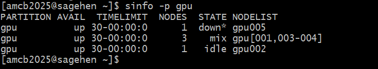
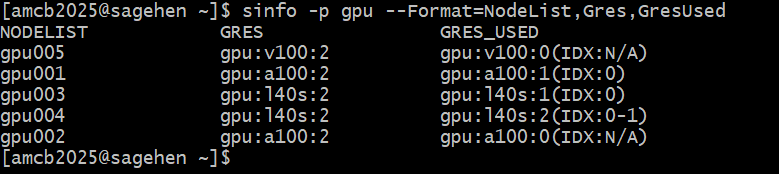

All in One View
Content from The AI Landscape for Researchers
Last updated on 2026-08-25 | Edit this page
Estimated time: 15 minutes
Overview
Questions
- What AI tools are available for research and academia?
- Why would you run AI models on HPC clusters instead of cloud services?
Objectives
- Survey the landscape of modern AI tools and models
- Understand why HPC matters for AI-assisted research
- Recognize when cloud vs. local AI is appropriate
Why HPC for AI Tools?
Many researchers ask: “Why use Sagehen HPC for AI when services like ChatGPT are so easy to use?”
Data Privacy is Non-Negotiable for Restricted Data
Cloud AI services cannot be used with restricted data (FERPA, medical records, export-controlled research). If your data is protected by law, it must stay on Pomona infrastructure. This decision is about compliance, not preference.
Reasons to Use HPC for AI
- Data privacy: Restricted data (FERPA, medical, financial) cannot go to external services
- Computational power: Sagehen’s 10 GPUs — A100 (80 GB), L40S (48 GB), and RTX PRO 6000 (96 GB ECC) — handle production workloads
- Data locality: Working with large datasets is faster on local storage than uploading to cloud services
- Reproducibility: Full control over model versions and environments
- Cost: Sagehen HPC is included in lab allocations; cloud GPU costs scale rapidly with intensive compute
The Modern AI Landscape
Large Language Models (LLMs)
Cloud-based (proprietary): ChatGPT (OpenAI), Claude (Anthropic), Gemini (Google). Per-token pricing; best for quick queries with non-sensitive data.
Local (open-weight, can run on Sagehen): gpt-oss (OpenAI), Qwen (Alibaba), Mistral, Phi (Microsoft), Gemma (Google), Llama (Meta). Useful sizes run from about 4B to over 100B parameters. Best for sensitive data, fine-tuning, and cost-effective batch work.
“Open-Weight” Is Not the Same as “Open-Source”
You can download and run these models, but the licences differ sharply. Some are Apache 2.0 or MIT; others carry custom terms with use restrictions, and some require you to request access before downloading. Training data is almost never released, so none are open-source in the sense a software licence means it.
Check the licence before you build a published result on a model — see Episode 10.
Computer Vision and Scientific ML
Vision models for Sagehen: YOLO (object detection), Stable Diffusion (image generation), CLIP (image-text understanding), SAM (segmentation).
Scientific ML: AlphaFold (protein structure), ESMFold, weather prediction models, climate downscaling, satellite imagery analysis.
Model Size and Requirements
Rather than memorise a model list that will be out of date within months, learn the arithmetic:
VRAM for weights ≈ parameters × bytes-per-parameter
16-bit → 2 bytes | 8-bit → 1 byte | 4-bit → 0.5 bytes
Then add 20-40% for activations and the KV cache; much more for long contexts.So a 7B model needs roughly 14 GB at 16-bit, or 3.5 GB at 4-bit, plus headroom.
Worked examples, accurate as of August 2026 — check current sizes on Hugging Face before planning a job:
| Model | Precision | Weights | Sensible GPU |
|---|---|---|---|
| Phi-4-mini (3.8B) | 4-bit | ~2 GB | Any |
| Qwen3 8B | 4-bit | ~4 GB | L40S |
| gpt-oss-20b | native | ~16 GB | L40S |
| Qwen3 32B | 4-bit | ~16 GB | L40S |
| gpt-oss-120b | native | ~60 GB | A100 |
| Llama 4 Scout (109B total) | 4-bit | ~55 GB | A100 |
| Stable Diffusion XL | 16-bit | ~7 GB | L40S |
Mixture-of-Experts Models Still Need All the Weights
Several current models are mixture-of-experts: Llama 4 Scout has 109B total parameters but activates only about 17B per token. That makes it faster than its size suggests, not smaller. All 109B must be resident in GPU memory.
Size your GPU request from total parameters. Sizing from the active count is a common and expensive mistake.
The AI Tool Decision is Data-Driven
It is tempting to choose AI tools based on capability, but the actual decision rule is simpler: what data are you using? Once you know the data classification, the tool choice is largely determined.
Challenge: Match Models to GPUs
For each model below, identify which Sagehen GPU (L40S 48 GB, A100 80 GB, or RTX PRO 6000 96 GB) is the minimum required:
- Phi-4-mini 3.8B at 4-bit (~5GB VRAM)
- Qwen3 32B at 4-bit (~20GB VRAM)
- gpt-oss-120b (~60GB VRAM)
- Stable Diffusion XL (24GB VRAM)
- gpt-oss-120b serving a 128K-token context (~90GB VRAM)
- Phi-4-mini: L40S (48GB) – 5GB used, enormous headroom
- Qwen3 32B 4-bit: L40S (48GB) – 20GB used, room for long contexts
- gpt-oss-120b: A100 (80GB) – needs 60GB, exceeds L40S
- Stable Diffusion XL: L40S (48GB) – 24GB fits, with room for batching
- gpt-oss-120b, 128K context: RTX PRO 6000 (96GB) – the KV cache pushes total memory past the A100’s 80GB
The L40S is the least contended card, so small and mid-sized jobs should start there. Scale up only when the memory figure genuinely requires it.
Notice that items 3 and 5 are the same model: context length alone moved the job up a GPU tier. Estimate your context budget before you request a card.
- HPC is essential for sensitive data, large models, and reproducible research
- Cloud AI is easy but sends data externally; local AI keeps data private
- Model size, memory requirements, and accuracy vary widely across AI tools
- Data classification – not model capability – should drive tool selection
Content from Types of AI Models
Last updated on 2026-08-25 | Edit this page
Estimated time: 15 minutes
Overview
Questions
- What types of AI models are available for research?
- What are the computational requirements for different model types?
- How do open-source models compare to proprietary ones?
Objectives
- Distinguish between LLMs, vision models, and scientific ML models
- Understand model sizes, quantization, and GPU requirements
- Compare open-source models available on Sagehen with cloud alternatives
Large Language Models in Detail
Open-Weight Models for Sagehen
Specific models turn over quickly. Choose along three axes that do not: licence, size, and whether the download is gated.
The examples below are current as of August 2026.
gpt-oss (OpenAI) — gpt-oss-20b,
gpt-oss-120b
- Apache 2.0, ungated:
pip installand go, no access request - 20b runs in about 16 GB; 120b fits a single A100 (80 GB)
- The path of least resistance for workshop work and for publication
Qwen3 (Alibaba)
- Apache 2.0, ungated, unusually wide range of sizes
- Strong multilingual coverage — worth knowing if your corpus is not English
Mistral Small (Mistral AI)
- Apache 2.0; efficient general-purpose model that fits a single L40S
Phi-4-mini (Microsoft)
- MIT licence, about 3.8B parameters
- The smallest thing here that is still useful; good for prototyping a pipeline before committing GPU hours
Gemma 3 (Google) — multimodal, handles image input. Note the licence is Google’s own Gemma terms, not an OSI-approved open-source licence.
Llama 4 (Meta) — mixture-of-experts; Scout is 109B total / 17B active. Requires accepting the Llama Community Licence before download.
Prefer Ungated Models Unless You Need Otherwise
A gated model (Llama, among others) means: accept a licence on the model’s page, generate a token, then authenticate before downloading. That is fine for sustained project work, but it stalls a workshop and adds a licence term you must honour at publication.
Unless a gated model gives you something you specifically need, start with an Apache 2.0 or MIT one.
Quantization: Making Models Smaller
Quantization reduces model precision to use less GPU memory:
- 32-bit (full precision): Best quality, most memory
- 16-bit (half precision): Negligible quality loss, half the memory
- 4-bit quantization: 75% memory reduction, slight quality trade-off
For many research tasks (summarization, classification), the difference between 16-bit and 4-bit is negligible. Always test on your actual data.
Vision and Multimodal Models
| Model | Task | VRAM | Notes |
|---|---|---|---|
| YOLO | Object detection | 4-8GB | Fast, real-time capable |
| Stable Diffusion 1.5 | Image generation | 4GB | Text-to-image |
| Stable Diffusion XL | Image generation | 24GB | Higher quality |
| CLIP | Image-text matching | 4GB | Zero-shot classification |
| SAM (Meta) | Image segmentation | 8-16GB | Segment anything |
Scientific ML Models
Protein science: AlphaFold, ESMFold – predict 3D protein structure from amino acid sequences. Often require 20-100GB+ memory.
Climate and earth science: FourCastNet, climate downscaling models, satellite imagery analysis. Require massive datasets and sometimes distributed training across multiple GPUs.
Genomics: Language models trained on protein/RNA sequences, disease prediction models. Often require specialized data preprocessing.
Choosing the Right Model
Start Small, Scale Up
Begin with the smallest model that meets your quality needs:
- Try Phi-4-mini or an 8B-class model such as Qwen3 8B first
- If quality is insufficient, scale to a 20-30B model such as
gpt-oss-20b - Use a 100B-class model only when smaller ones clearly underperform
- Always use 4-bit quantization unless you need full precision
This conserves GPU resources and reduces queue wait times on Sagehen.
Challenge: Model Selection for Research Tasks
For each scenario, recommend a model type and size:
- Summarizing 50 published research papers
- Classifying sentiment in 10,000 customer reviews (proprietary data)
- Detecting objects in microscopy images
- Generating Python code to analyze a public dataset
- Summarizing papers (public data): Cloud AI is fine since papers are public. If you prefer local: an 8B-class model on an L40S.
- Sentiment classification (proprietary): Local AI required. A fine-tuned encoder such as BERT, or an 8B-class instruct model, on an L40S. Batch processing is efficient.
- Object detection in microscopy: YOLO or ResNet on L40S depending on image resolution and batch size.
-
Code generation (public data): Cloud AI is
acceptable. Locally,
gpt-oss-20bon an L40S gives good code generation results.
Note that only scenario 2’s answer was forced by the data. The others were choices about cost and convenience — which is the normal case.
- Useful local LLMs range from about 4B to over 100B parameters
- Choose on licence, size and whether the download is gated – not on leaderboards
- Quantization (4-bit) reduces memory by 75% with minimal quality loss
- Vision models (YOLO, Stable Diffusion) and scientific ML have specialized uses
- Start with the smallest model that meets your quality threshold and scale up
Content from Pomona's AI Use Policy
Last updated on 2026-08-25 | Edit this page
Estimated time: 15 minutes
Overview
Questions
- What is Pomona’s policy on AI tool usage?
- What are the three data classification tiers?
- What are the consequences of policy violations?
Objectives
- Understand Pomona’s AI tool usage policy and guidelines
- Know the three-tier data classification system
- Recognize consequences of policy violations at each severity level
Pomona’s AI Tool Policy
Official title: “Use of AI Tools with Pomona College Data” — guidance on aligning AI usage with Pomona’s data governance structure and policies.
Where to find it: listed under Policies and Guidelines on the Data Governance page. The document itself is in Box and requires campus login.
Core principle: data classification determines which tools you can use.
This Episode Summarises; the Guideline Governs
What follows is a working summary for teaching. The Data Governance page is authoritative and is revised as tools and contracts change. Where this lesson and the current guideline disagree, the guideline wins — and please tell its-hpc@pomona.edu so the lesson gets fixed.
The same page also holds the Data Classifications document that defines the tiers used throughout this workshop.
Key Policy Principles
- Data Classification First: Classify data before using any AI tool
- Risk Proportionate: Higher risk data requires stricter controls
- Transparency Required: Disclose AI usage in research and coursework
- Compliance Non-Negotiable: Federal laws (FERPA, HIPAA) override convenience – no exceptions for “just this once”
Policy Quick Reference
PUBLIC data
External AI: OK (ChatGPT, Claude, Gemini, etc.)
Local AI: OK (Sagehen)
PROPRIETARY data
External AI: NOT OK without written permission
Local AI: Required
RESTRICTED data (FERPA, medical, export-control, PII)
External AI: ABSOLUTELY NOT
Local AI: Required + encryption + audit logsConsequences of Violations
Minor (Good Faith Effort)
Scenario: Uploaded proprietary draft to ChatGPT (no FERPA/medical data). Result: Warning, informal discussion with advisor, required training.
Who to Ask for Help
| Contact | For |
|---|---|
| Your Advisor | Research context, data questions |
| its-hpc@pomona.edu | Sagehen, local AI, data classification |
| OVPR (ovpr@pomona.edu) | Export control, IRB, compliance |
| Library Research Support | Citation, attribution, data management |
| Provost’s Office | Academic integrity, policy clarifications |
When in Doubt, Ask First
Contact its-hpc@pomona.edu before using AI with any data you are unsure about. Getting help early prevents problems later. Compliance is a partnership between you, your advisor, the IRB (if applicable), and IT.
Challenge: Policy Scenarios
For each scenario, what does Pomona’s policy require?
- You want to use ChatGPT to summarize a published paper
- You want to analyze unpublished lab results with Claude
- You want to use AI to detect patterns in student grade data
- Published paper (PUBLIC): External AI is fine. No restrictions.
- Unpublished lab results (PROPRIETARY): Local AI only (Sagehen), unless you obtain explicit written permission from all stakeholders.
- Student grade data (RESTRICTED/FERPA): Local AI only, with encryption and audit logging. Absolutely no external AI services.
- Pomona policy requires data classification before AI tool selection
- PUBLIC data may use external AI; PROPRIETARY requires local AI or written permission; RESTRICTED data must never go to external AI
- Violations can result in warnings, retractions, or legal consequences
- When unsure, contact its-hpc@pomona.edu before proceeding
Content from Data Classification for AI
Last updated on 2026-08-25 | Edit this page
Estimated time: 20 minutes
Overview
Questions
- How do you classify data for AI tool usage?
- What is the difference between PUBLIC, PROPRIETARY, and RESTRICTED data?
- Which AI tools are appropriate for each classification?
Objectives
- Classify research data into the three Pomona tiers
- Map data classifications to appropriate AI tools
- Apply the data classification decision tree
- Document data handling for audit trails
The Three Tiers
Tier 1: PUBLIC
Information that is already public or could be made public without harm.
Examples: Published research papers, public datasets (Kaggle, UCI ML Repository), conference presentations, general knowledge, anonymous aggregated statistics.
AI Tool Policy: May use external AI (ChatGPT, Claude, Gemini, etc.)
Tier 2: PROPRIETARY
Information restricted to specific individuals or organizations.
Examples: Draft research (unpublished), lab notebooks, preliminary results, patent applications, NDA-covered research, proprietary algorithms, grant-funded research with restrictions.
AI Tool Policy: MUST use local AI only (Sagehen GPUs). External AI requires explicit written permission from all stakeholders. Encryption recommended.
Tier 3: RESTRICTED
Highly sensitive information protected by federal law.
Examples: FERPA (student records, grades, IDs), medical/HIPAA data, financial records, export-controlled research (ITAR/EAR), PII (SSN, phone numbers, addresses), biometric data.
AI Tool Policy: LOCAL AI ONLY with mandatory AES-256-GCM encryption. No exceptions.
When in Doubt, Classify as RESTRICTED
If you are unsure about classification, default to RESTRICTED. You can always relax to a lower classification after confirming with your PI, IRB, or the privacy office.
Decision Tree for AI Tool Selection
1. Is the data already publicly available?
YES -> External AI is acceptable
NO -> Continue
2. Does it contain FERPA, HIPAA, financial, or export-controlled data?
YES -> LOCAL AI ONLY (Sagehen GPU) with encryption
NO -> Continue
3. Does it contain NDA, patent, or proprietary methods?
YES -> LOCAL AI ONLY
NO -> Continue
4. Would sharing cause institutional embarrassment?
YES -> Consider local AI (safer)
NO -> External AI is acceptableReal-World Classification Examples
Student course evaluations: RESTRICTED (FERPA). Use a local model on Sagehen.
CSV with columns [ID, Age, Income, Disease_Status]: Could be RESTRICTED if ID is a real student ID. Remove the ID column to create a PUBLIC version.
Published research papers: PUBLIC. Safe with any AI tool.
Aggregated enrollment statistics (no individuals): PROPRIETARY. Use local AI or obtain written permission.
Safe Data Sharing Pattern
If you must use external AI with potentially sensitive data:
PYTHON
# STEP 1: Redact sensitive information
original = "Student Alice (ID: 12345) scored 92 on exam"
safe = "Student (ID: XXXXX) scored 92 on exam"
# STEP 2: Use external AI on redacted version only
# STEP 3: Apply results to original data locallyChallenge: Classify Your Data
For each scenario, classify the data and recommend AI tools:
- A list of 1000 student names and their major
- Published research paper about climate change
- Your lab’s unpublished results with no identifiers
- Code from a public GitHub repository
- Export-controlled research paper (marked CONTROLLED)
- Student names + major: RESTRICTED (FERPA). Local AI only on Sagehen.
- Published climate paper: PUBLIC. External AI safe.
- Lab results, anonymized: PROPRIETARY. Local AI preferred; external with written permission.
- Public GitHub code: PUBLIC. External AI safe.
- Export-controlled: RESTRICTED. Local AI only, with encryption.
The data classification – not the AI tool capability – determines your choice.
- PUBLIC data: safe with external AI tools
- PROPRIETARY data: local AI only, or external with explicit written permission
- RESTRICTED data (FERPA, medical, financial, export-controlled): never external AI
- Use the decision tree to classify before selecting any AI tool
- Redact personal identifiers before sharing data with any external tool
Content from Sensitive Data and AI
Last updated on 2026-08-25 | Edit this page
Estimated time: 20 minutes
Overview
Questions
- How do FERPA, HIPAA, and export controls affect AI tool choices?
- How do you protect sensitive data when using AI?
- What compliance frameworks apply to AI workflows?
Objectives
- Understand FERPA, HIPAA, and export control requirements for AI
- Apply NIST SP 800-171 principles to AI workflows
- Use encryption and local models to protect restricted data
- Create compliance documentation for AI-assisted research
FERPA (Student Data Protection)
Federal law protecting student privacy. Applies to anyone working with student educational records.
Protected information: Student names linked with IDs, grades, academic records, course enrollment, disciplinary records, transcripts.
Penalty: Institution loses federal funding; personal liability of $1000+ per violation.
Classroom implications:
- Do NOT upload student work, grades, or feedback to any external AI service
- Do NOT ask an external AI “What’s wrong with this student’s paper?”
- DO use a local model on Sagehen, or anonymize completely
- DO ask “What’s the grammatical issue in this sentence?” (without student context)
HIPAA (Healthcare Data)
Applies to researchers working with health/medical data.
Protected Health Information (PHI): Patient names, medical record numbers, health conditions, treatment information, dates of service.
Penalty: $100-$50,000 per violation; criminal liability possible.
Safe approach: De-identify data (remove all identifiers), use local AI only, consider HIPAA-compliant platforms, consult the IRB.
Export Controls (ITAR/EAR)
US government restrictions on sharing certain technology and research.
Affected areas: Cryptography, semiconductors, advanced materials, missile technology, some biotechnology and ML applications.
Risk: Uploading export-controlled data to a cloud AI (whose company may have international employees) constitutes technology export without a license – a federal crime.
Safe approach: All computation on US infrastructure (Sagehen), no cloud AI, consult the export control officer.
Working with Restricted Data on Sagehen
BASH
# Use gocryptfs for encryption at rest
gocryptfs --init /bigdata/lab/<labname>/encrypted_research
gocryptfs /bigdata/lab/<labname>/encrypted_research /mnt/decrypted
# Work with data in /mnt/decrypted
# Data is encrypted at rest in /bigdata
# Use local models for analysis
python3 local_analysis.py --data /mnt/decrypted/data.csvCompliance Documentation
Before starting any AI-assisted research, complete this checklist:
Pre-Research AI Governance Checklist:
[ ] Identified all data types in project
[ ] Classified each type (PUBLIC/PROPRIETARY/RESTRICTED)
[ ] Noted any FERPA, medical, or export-control data
[ ] Confirmed tool selection matches classification
[ ] No RESTRICTED data going to external AI
[ ] Verification plan documented
[ ] Disclosure language preparedChallenge: Write a Data Handling Policy
For a research project (real or hypothetical), write a brief policy:
- What data classifications are in your project?
- Which AI tools will you use and why?
- How will you document AI usage?
- How will you secure any restricted data?
Example – “Analyzing publication trends in computer science”:
- Data: PRIMARY: PUBLIC (published papers from arXiv). METADATA: PROPRIETARY (our unpublished analysis).
- Tools: ChatGPT for summarizing papers (PUBLIC data). A local model on Sagehen for preliminary results (PROPRIETARY data).
- Documentation: All interactions logged in experiment log; outputs verified before publication.
- Security: No restricted data in this project. Preliminary results stored on Sagehen until publication.
- FERPA absolutely prohibits sending student data to external AI
- HIPAA requires de-identification and local AI for medical data
- Export-controlled research must stay on US infrastructure (Sagehen)
- Use gocryptfs for encryption of restricted data at rest
- Document all AI usage with a pre-research governance checklist
- Verify all AI-generated outputs before using in publications
Content from Local vs Cloud AI
Last updated on 2026-08-25 | Edit this page
Estimated time: 15 minutes
Overview
Questions
- When should I use cloud AI vs. local AI on Sagehen?
- What are the tradeoffs in quality, speed, privacy, and cost?
Objectives
- Compare cloud and local AI on privacy, quality, speed, and cost
- Apply the decision framework to real research scenarios
- Understand when each approach is most appropriate
Cloud AI (ChatGPT, Claude, Gemini)
Pros: the strongest available models, no setup required, instant responses, continuous improvement, works from anywhere.
Cons: data sent to external servers, no control over data retention, cannot use RESTRICTED data, subscription costs, API rate limits, and the model can change or be withdrawn underneath you — which breaks reproducibility.
Best for: PUBLIC data, quick answers, rapid prototyping.
Local AI (Run on Sagehen)
Pros: Data stays on Pomona infrastructure, can use RESTRICTED and PROPRIETARY data, no subscription cost, full control, reproducible results.
Cons: generally smaller models than the leading hosted ones, setup required, slower responses (GPU-dependent), GPU queue wait times.
Best for: RESTRICTED data, sensitive research, reproducible pipelines, batch processing.
Decision Framework
Use Cloud AI (ChatGPT/Claude) when:
Data is PUBLIC
Speed is critical
You need the strongest available model
One-off questions
Use Local AI (Sagehen) when:
Data is RESTRICTED or PROPRIETARY
Reproducibility matters
Privacy is critical
Batch processing many documents
Cost matters at scaleWhen to Use Each: Examples
Cloud AI appropriate: - Drafting and editing text with ChatGPT (non-sensitive) - Exploring general research questions - Code generation and debugging - Summarizing published articles
Local AI required: - Analyzing student survey data (FERPA) - Processing lab proprietary datasets - Fine-tuning on domain-specific text - Running vision models on medical images - Batch processing hundreds of files
Cloud AI Concerns to Remember
- Data privacy: All input is sent to external servers
- Data retention: Unclear long-term data handling by providers
- Cost at scale: Expensive for thousands of queries
- Dependency: Service changes or shutdowns affect your work
- Cannot use: FERPA, medical data, export-controlled information, unpublished proprietary data
Challenge: AI Tool Selection Matrix
For each scenario, decide: cloud AI, local AI on Sagehen, or “don’t use AI”:
- Analyzing published climate data for weather predictions
- Writing code to analyze student mental health surveys (with student IDs)
- Generating creative text for a novel
- Summarizing your lab’s unpublished methods
- Creating visualizations of a proprietary compound database
- Translating published papers from Spanish to English
- Climate data (PUBLIC): Cloud AI acceptable.
- Student surveys with IDs (RESTRICTED/FERPA): Local AI ONLY on Sagehen.
- Creative text (no research data): Cloud AI fine.
- Unpublished methods (PROPRIETARY): Local AI preferred; external only with PI written permission.
- Proprietary database (PROPRIETARY): Local AI only or request approval.
- Published papers (PUBLIC): Cloud AI acceptable.
Data classification – not AI capability – determines the choice.
- Cloud AI is faster and higher quality but sends data externally
- Local AI on Sagehen keeps data private and is cost-effective at scale
- Data classification determines which approach is allowed
- Cloud AI is never acceptable for RESTRICTED or uncleared PROPRIETARY data
- Build workflows that use cloud AI for public data and local AI for sensitive data
Content from Running Models on Sagehen
Last updated on 2026-08-24 | Edit this page
Estimated time: 25 minutes
Overview
Questions
- How do I set up AI tools on Sagehen HPC?
- What modules and environments are needed?
- How do I access GPUs and submit AI jobs?
Objectives
- Load required modules for AI work (anaconda3, CUDA)
- Create conda environments for PyTorch and TensorFlow
- Access GPU resources via Slurm for interactive and batch jobs
- Configure model caching to avoid quota issues
Sagehen Storage for AI Work
| Location | Quota | Use For |
|---|---|---|
/rhome/<myusername> |
100GB | Code, conda environments, notebooks |
/bigdata/lab/<labname> |
1TB shared (BeeGFS) | Large datasets, model checkpoints |
/scratch |
Temporary (deleted when the job ends) | Job I/O, intermediate results |
Download large models to /bigdata or
/scratch – not your home directory.
Loading Modules
BASH
module purge
module load anaconda3 # Python and package management
module load cuda/12.2.1 # NVIDIA CUDA toolkit (current default)
module list # Verify loaded modulesThere is no separate cuDNN module on Sagehen – the GPU-enabled PyTorch and TensorFlow packages you install with conda bundle their own cuDNN libraries.
Creating a Conda Environment
BASH
module load anaconda3
conda create -n ai-pytorch python=3.11
conda activate ai-pytorch
# Install PyTorch with GPU support
conda install pytorch::pytorch torchvision torchaudio pytorch-cuda=12.1 \
-c pytorch -c nvidia
# Install common packages
conda install numpy pandas scikit-learn matplotlib jupyter -c conda-forgeFor TensorFlow, create a separate environment:
Configure Model Caching
By default, Hugging Face downloads to
~/.cache/huggingface, which fills your home quota quickly.
Redirect it:
Interactive GPU Sessions
Before requesting a GPU, check the gpu partition’s
current state with sinfo -p gpu:

sinfo -p gpu shows which GPU nodes are up.Batch Jobs for Model Training
BASH
#!/bin/bash
#SBATCH --job-name=llama-inference
#SBATCH --partition=gpu
#SBATCH --gres=gpu:1
#SBATCH --mem=80G
#SBATCH --cpus-per-task=16
#SBATCH --time=08:00:00
#SBATCH --output=logs/%j.log
module purge && module load anaconda3 cuda/12.2.1
source activate ai-pytorch
export HF_HOME=/bigdata/lab/<labname>/huggingface_cache
python your_script.pySubmit with sbatch your_script.sh.
Start Small and Scale Up
When first testing an AI workflow, request a smaller GPU (L40S) with less time. Once your script works reliably, scale to larger GPUs or longer time limits. This saves compute hours and reduces queue wait time.
You can see which GPU types exist and how heavily they’re used with
sinfo’s GRES columns:

Common Troubleshooting
- “No module named torch”: Load anaconda3 and activate your conda environment
- “CUDA out of memory”: Use 4-bit quantization, reduce batch size, or request a larger GPU
-
Home quota full from models: Set
HF_HOMEto/bigdata -
GPU not detected: Verify the cuda module is loaded
and your job requested a GPU (
--gres=gpu:1)
Challenge: Write a GPU Setup Script
Write a Slurm script that loads modules, activates a conda
environment, sets HF_HOME, and verifies GPU access by printing
torch.cuda.is_available() and the GPU name.
BASH
#!/bin/bash
#SBATCH --job-name=gpu-test
#SBATCH --partition=gpu
#SBATCH --gres=gpu:1
#SBATCH --mem=32G
#SBATCH --cpus-per-task=4
#SBATCH --time=00:10:00
module purge && module load anaconda3 cuda/12.2.1
conda activate ai-pytorch
export HF_HOME=/bigdata/lab/<labname>/huggingface_cache
python3 -c "
import torch
print(f'GPU available: {torch.cuda.is_available()}')
if torch.cuda.is_available():
print(f'GPU: {torch.cuda.get_device_name(0)}')
print(f'Memory: {torch.cuda.get_device_properties(0).total_mem / 1e9:.0f} GB')
"Submit with sbatch gpu_test.sh and check output in
slurm-*.out.
- Load the anaconda3 and cuda modules before GPU work
- Use conda environments for reproducible, isolated Python setups
- Configure HF_HOME to /bigdata to avoid filling home quota with models
- Use
srunfor interactive GPU testing andsbatchfor batch jobs - Start with smaller GPUs and scale up once your workflow is validated
Content from Running Local LLMs on Sagehen
Last updated on 2026-08-25 | Edit this page
Estimated time: 25 minutes
Overview
Questions
- How do I set up and run open-source LLMs on Sagehen?
- How do I use Hugging Face models responsibly?
- How do I build a private AI pipeline for restricted data?
Objectives
- Load and run open-source LLMs on Sagehen GPUs
- Use Hugging Face transformers for model inference
- Apply 4-bit quantization to reduce GPU memory usage
- Build a private pipeline for processing sensitive data
Why Not Ollama?
Ollama is the tool most guides reach for, so it is worth saying
plainly: we do not use it on Sagehen. There is no ollama
module, and running your own Ollama binary is blocked by
permissions.
Instead we use Hugging Face Transformers, which installs cleanly into your conda environment and gives you the same local, private LLM capability with far more control over quantization and model revisions. If Ollama becomes available cluster-wide later, every concept here transfers directly.
(The file name for this episode still says ollama so
that existing links keep working.)
Setting Up a Local LLM on Sagehen
Step 1: Choose a Model
We use openai/gpt-oss-20b. It is Apache 2.0 licensed and
ungated, so it downloads without an access request —
which matters in a workshop where twenty people would otherwise each be
waiting on licence approval.
Some models are gated and do require approval. Llama is the common example:
- Visit the model page, for example
https://huggingface.co/meta-llama/Llama-4-Scout-17B-16E-Instruct - Click “Request Access” and accept the licence
- Create a Hugging Face token and run
huggingface-cli login
Approval is usually quick but is not instant, and it is not guaranteed. Plan around it rather than discovering it mid-job.
Step 3: Run Model Inference
PYTHON
import torch
from transformers import AutoTokenizer, AutoModelForCausalLM
model_name = "openai/gpt-oss-20b"
tokenizer = AutoTokenizer.from_pretrained(model_name)
model = AutoModelForCausalLM.from_pretrained(
model_name,
dtype=torch.bfloat16,
device_map="auto"
)
prompt = "Explain photosynthesis in simple terms."
inputs = tokenizer(prompt, return_tensors="pt").to(model.device)
outputs = model.generate(**inputs, max_new_tokens=200)
print(tokenizer.decode(outputs[0], skip_special_tokens=True))Set the Cache Directory Before You Download
Model weights are large and Hugging Face caches them under
~/.cache by default, which will consume your 100 GB
/rhome quota quickly. Point the cache at your lab’s storage
instead:
Put that line in your job script. Do not cache to
/scratch — it is deleted when the job ends, so you would
re-download every run.
Using 4-bit Quantization
Quantization reduces memory by 75%, fitting larger models on smaller GPUs:
PYTHON
from transformers import BitsAndBytesConfig, AutoModelForCausalLM
bnb_config = BitsAndBytesConfig(
load_in_4bit=True,
bnb_4bit_use_double_quant=True,
bnb_4bit_quant_type="nf4",
bnb_4bit_compute_dtype=torch.bfloat16
)
model = AutoModelForCausalLM.from_pretrained(
"Qwen/Qwen3-32B",
quantization_config=bnb_config,
device_map="auto"
)
# 32B model now fits in ~16GB instead of ~64GBBuilding a Private AI Pipeline
For processing restricted data where nothing leaves Sagehen:
PYTHON
class LocalAIPipeline:
def __init__(self, model_name="openai/gpt-oss-20b"):
self.tokenizer = AutoTokenizer.from_pretrained(model_name)
self.model = AutoModelForCausalLM.from_pretrained(
model_name, dtype=torch.bfloat16, device_map="auto"
)
def analyze(self, text, task="summarize"):
prompts = {
"summarize": f"Summarize in 2 sentences:\n{text}",
"classify": f"Classify sentiment (positive/negative/neutral):\n{text}",
"extract": f"Extract key points:\n{text}"
}
prompt = prompts.get(task, text)
inputs = self.tokenizer(prompt, return_tensors="pt").to(self.model.device)
with torch.no_grad():
outputs = self.model.generate(**inputs, max_new_tokens=200,
do_sample=False)
return self.tokenizer.decode(outputs[0], skip_special_tokens=True)Auditing AI Usage
Keep records for Pomona compliance:
PYTHON
import json
from datetime import datetime
usage_log = {
"timestamp": datetime.now().isoformat(),
"model": "openai/gpt-oss-20b",
"model_revision": "a1b2c3d", # pin the exact weights for reproducibility
"data_type": "Restricted (FERPA)",
"task": "Sentiment classification",
"input_tokens": 500,
"output_tokens": 200
}
with open("ai_usage_log.json", "a") as f:
json.dump(usage_log, f)
f.write("\n")Model Quality vs. Size Tradeoff
Smaller quantized models run faster and use less memory with slightly lower quality. For many research tasks (summarization, classification), the difference is negligible. Always test on your actual data to verify the quality-efficiency tradeoff is acceptable.
Challenge: Run a Local LLM Job
Write a Slurm batch script that:
- Loads modules and activates a conda environment
- Loads
gpt-oss-20bin bfloat16 - Asks it a question about machine learning
- Times the inference and prints the result
BASH
#!/bin/bash
#SBATCH --job-name=llm-inference
#SBATCH --partition=gpu
#SBATCH --gres=gpu:1
#SBATCH --mem=32GB
#SBATCH --time=00:10:00
module purge && module load anaconda3 cuda/12.2.1
conda activate llm_env
# Keep model weights off your /rhome quota
export HF_HOME=/bigdata/lab/<labname>/huggingface_cache
python3 << 'EOF'
import time, torch
from transformers import AutoTokenizer, AutoModelForCausalLM
model_name = "openai/gpt-oss-20b"
tokenizer = AutoTokenizer.from_pretrained(model_name)
model = AutoModelForCausalLM.from_pretrained(
model_name, dtype=torch.bfloat16, device_map="auto")
question = "What is machine learning?"
inputs = tokenizer(question, return_tensors="pt").to(model.device)
start = time.time()
with torch.no_grad():
outputs = model.generate(**inputs, max_new_tokens=150)
print(f"Time: {time.time() - start:.1f}s")
print(tokenizer.decode(outputs[0], skip_special_tokens=True))
EOF- Open-weight LLMs (gpt-oss, Qwen, Mistral, Phi) run locally on Sagehen GPUs
- Prefer ungated, permissively licensed models – no access request to wait on
- 4-bit quantization reduces memory by 75% with minimal quality loss
- Set
HF_HOMEto lab storage so weights do not fill your/rhomequota - Build private pipelines for restricted data that never leaves Sagehen
- Log AI usage for Pomona compliance with timestamps, model, revision and data type
Content from Responsible AI Practices
Last updated on 2026-08-25 | Edit this page
Estimated time: 20 minutes
Overview
Questions
- How do I properly disclose AI tool usage in research?
- How do I verify AI-generated content for accuracy?
- What are hallucinations and how do I detect them?
Objectives
- Properly disclose AI usage in publications and code
- Verify AI-generated claims, citations, and code
- Detect and address AI hallucinations
- Write responsible AI disclosure statements
Plagiarism and Attribution
Modern AI makes plagiarism easier but also more detectable. Requirements:
- Explicitly disclose AI tool use in your work
- Quote or clearly mark AI-generated text
- Cite the model and version used
- Describe your modifications and verification
Example disclosure: “I used gpt-oss-20b running on Sagehen HPC to generate initial outlines. The model produced: [quote]. I then revised and verified all claims with primary sources.”
Hallucinations and Verification
AI models generate plausible-sounding text that is sometimes false. LLMs “hallucinate” facts, and confidence is not correlated with accuracy.
Critical verification steps:
- Check factual claims against authoritative sources
- Test all generated code before using it
- Verify citations actually exist and match the claims made
- Treat AI output like a draft that needs fact-checking
Hallucinations Affect All Models
Both cloud and local models hallucinate. Hosted and local models alike confidently generate false information. Never trust AI output without verification, especially in research.
Disclosing AI Use in Publications
In Methods Section:
Statistical analyses were performed in Python 3.11. For interpretation of
preliminary results, we used gpt-oss-20b (OpenAI, Apache 2.0) on Pomona's Sagehen HPC
to generate initial hypotheses, which we then tested using formal statistical
tests. All reported results are based on independent analysis of raw data.In Code Comments:
PYTHON
# DISCLOSURE: Initial analysis drafted with a local model on Sagehen.
# All numerical results independently verified against raw data.
# AI was not used for statistical inference.Inadequate vs. Adequate Disclosure
- Bad: “We used AI for analysis” (too vague)
- Bad: No mention of AI at all (violates research integrity)
- Good: “ChatGPT was used to draft the introduction, which was then extensively revised and cited appropriately.”
Disclose Even When It Feels Uncomfortable
Transparent disclosure builds trust. If you omit AI use and it is discovered later, the integrity violation is far more damaging than the admission.
Environmental Impact
Training and running large models consumes significant energy. Mitigate by:
- Using smaller models when possible (Phi-4-mini instead of a 100B-class model)
- Quantizing models (4-bit instead of 32-bit)
- Batching work for efficiency
- Considering environmental impact when choosing scale
Challenge: Audit an AI Output
Get a response from ChatGPT or Claude on a topic in your field. Audit it:
- Verify each factual claim
- Look for missing perspectives
- Identify unstated assumptions
- Note overconfident claims
- Write a paragraph describing what you would change before citing it
Example audit of “What causes ML model failures?”
ChatGPT said: “Models fail because of insufficient data, poor features, and overfitting. The solution is more data, better features, and regularization.”
Audit findings:
- Missing: distribution shift, architecture mismatch, deployment drift
- Assumes “more data” is always possible
- Claims a singular “solution” when multiple exist depending on root cause
- Does not acknowledge that some failures have no simple fix
Revised: “ML models fail for multiple reasons including data quality, feature engineering, overfitting, distribution shift, and organizational testing failures. Solutions depend on root cause analysis.”
- Always disclose AI usage specifically in methods sections and code comments
- Verify all AI-generated claims, citations, and code before use
- AI models hallucinate regardless of whether they are cloud or local
- Transparent disclosure builds credibility; concealment destroys it
- Consider environmental impact when choosing model size and scale
Content from Ethical Considerations and Next Steps
Last updated on 2026-08-25 | Edit this page
Estimated time: 20 minutes
Overview
Questions
- How do AI systems encode bias and what are the consequences?
- How do you audit AI outputs for fairness?
- What are the broader ethical implications of AI in research?
Objectives
- Understand sources of bias in AI systems
- Implement fairness audits for AI-generated results
- Write broader impact statements for AI-assisted research
- Apply ethical principles to your own research practice
Sources of Bias in AI
Training Data Bias
AI trained on historical data inherits historical biases. Example: facial recognition trained mostly on white faces achieves 95%+ accuracy on light skin tones but only 20-35% on darker skin tones.
Label Bias
Human annotators introduce their cultural and linguistic norms into training labels. Models learn those specific biases and may perform poorly on different populations.
Fairness Audits
If using AI to make predictions about people, test accuracy across groups:
PYTHON
import pandas as pd
data = pd.read_csv('test_data.csv')
data['predicted'] = model.predict(data)
data['correct'] = data['actual'] == data['predicted']
for group in data['demographic_group'].unique():
group_data = data[data['demographic_group'] == group]
accuracy = group_data['correct'].mean()
print(f"{group}: {accuracy:.1%}")
# If any group is far below others, there is a fairness problemDocument known limitations when you find disparities:
Broader Impact Statements
When publishing AI-assisted research, include:
BROADER IMPACT:
This research uses [specific AI tool] for [specific purpose].
Potential benefits:
- Faster research iteration
- Wider access to analytical capabilities
Potential risks:
- AI may propagate biases present in [domain]
- Overconfidence in AI hypotheses could mislead research
Mitigation:
- All outputs independently verified
- Tested for bias in [specific ways]
- Should not be deployed in [contexts] without further validationPrinciples for Ethical AI Use
Seven Principles for AI in Research
- Verification First: Never trust AI output without checking
- Transparency: Disclose usage clearly and specifically
- Document Limitations: Be explicit about what AI cannot do well
- Fairness Audits: Test outputs for bias on protected categories
- Responsible Deployment: Do not use AI where it has not been validated
- Attribution: Credit AI tools as you would human collaborators
- Integrity: AI accelerates research but does not replace verification
Next Steps
- Classify your data using the decision tree from Episode 4
- Set up your environment on Sagehen following Episode 7
- Start small with Phi-4-mini or an 8B-class model before scaling up
- Document everything – AI usage logs, verification steps, disclosures
- Stay current with evolving institutional policies and AI capabilities
- Ask for help at its-hpc@pomona.edu whenever uncertain
Challenge: Write a Disclosure Statement
For your research project (real or hypothetical):
- Identify where you might use AI
- Write a one-paragraph methods disclosure
- Describe what AI will and will not be used for
- Explain how you will verify outputs
- Note any bias concerns
Example for genomics research:
“Gene annotation analysis: We used gpt-oss-20b running on Pomona’s Sagehen HPC to generate initial literature review outlines and suggest potential regulatory elements. These AI-generated suggestions were not used directly; they served as hypothesis-generation tools. All reported results (promoter identification, regulatory predictions) were independently identified through systematic computational screening and validated against published databases. AI outputs included spurious regulatory elements and outdated citations that required manual filtering. AI tools were not used in any formal statistical inference. Bias concern: the model’s training data overrepresents well-studied organisms, so suggestions for understudied species require extra scrutiny.”
- AI systems encode biases from training data, labeling, and measurement choices
- Fairness audits should test accuracy across demographic groups before deployment
- Write broader impact statements acknowledging risks and mitigations
- Maintain research integrity: AI accelerates work but does not replace verification
- Start your AI journey with data classification, small models, and thorough documentation